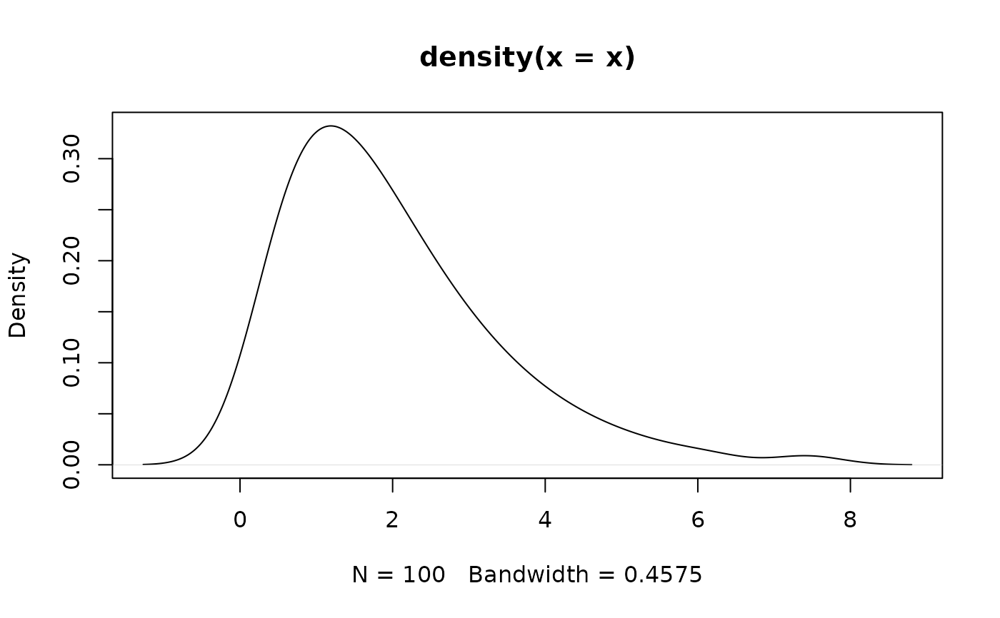

Generate a sequence of n-quantiles, i.e., a sample of size n with a
near-perfect distribution.
distribution(type = "normal", ...) distribution_custom(n, type = "norm", ..., random = FALSE) distribution_beta(n, shape1, shape2, ncp = 0, random = FALSE, ...) distribution_binomial(n, size = 1, prob = 0.5, random = FALSE, ...) distribution_binom(n, size = 1, prob = 0.5, random = FALSE, ...) distribution_cauchy(n, location = 0, scale = 1, random = FALSE, ...) distribution_chisquared(n, df, ncp = 0, random = FALSE, ...) distribution_chisq(n, df, ncp = 0, random = FALSE, ...) distribution_gamma(n, shape, scale = 1, random = FALSE, ...) distribution_mixture_normal(n, mean = c(-3, 3), sd = 1, random = FALSE, ...) distribution_normal(n, mean = 0, sd = 1, random = FALSE, ...) distribution_gaussian(n, mean = 0, sd = 1, random = FALSE, ...) distribution_nbinom(n, size, prob, mu, phi, random = FALSE, ...) distribution_poisson(n, lambda = 1, random = FALSE, ...) distribution_student(n, df, ncp, random = FALSE, ...) distribution_t(n, df, ncp, random = FALSE, ...) distribution_student_t(n, df, ncp, random = FALSE, ...) distribution_tweedie(n, xi = NULL, mu, phi, power = NULL, random = FALSE, ...) distribution_uniform(n, min = 0, max = 1, random = FALSE, ...) rnorm_perfect(n, mean = 0, sd = 1)
| type | Can be any of the names from base R's
Distributions, like |
|---|---|
| ... | Arguments passed to or from other methods. |
| n | the number of observations |
| random | Generate near-perfect or random (simple wrappers for the base R
|
| shape1 | non-negative parameters of the Beta distribution. |
| shape2 | non-negative parameters of the Beta distribution. |
| ncp | non-centrality parameter. |
| size | number of trials (zero or more). |
| prob | probability of success on each trial. |
| location | location and scale parameters. |
| scale | location and scale parameters. |
| df | degrees of freedom (non-negative, but can be non-integer). |
| shape | shape and scale parameters. Must be positive,
|
| mean | vector of means. |
| sd | vector of standard deviations. |
| mu | the mean |
| phi | Corresponding to |
| lambda | vector of (non-negative) means. |
| xi | the value of \(\xi\) such that the variance is \(\mbox{var}[Y]=\phi\mu^{\xi}\) |
| power | a synonym for \(\xi\) |
| min | lower and upper limits of the distribution. Must be finite. |
| max | lower and upper limits of the distribution. Must be finite. |
